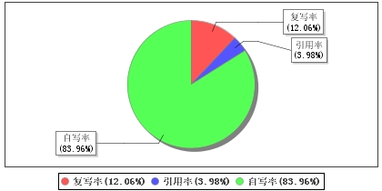

论文字数：17291个
总相似比：16.04(%) [即复写率与引用率之和]
检测指标：自写率 83.96 (%) 复写率12.06(%) 引用率3.98 (%)
其他指标：表格：0个 脚注：0个 尾注：0个

四、相似来源汇总
1、来源：互联网
篇名：《微信小程序getUserInfo解决方案-张小胖灬-博客园》
出处：http://www.baidu.com/link?url=LSM0qrO6U-lPbwLFVoEHpdM0YocQZv
相似片段数：1
2、来源：学位论文
篇名：《新经济时代企业信息系统开发和应用策略 》
作者：陈翔
出处： 硕博学位论文 2002年
相似片段数：1
3、来源：互联网
篇名：《使用微信点餐系统,了解餐饮行业发展趋势_手机搜狐网》
出处：http://www.baidu.com/link?url=2IqcvuxjRImg0ggkL_Hdwfi9K4svmB
相似片段数：1
4、来源：互联网
篇名：《餐饮与小程序走向新的模式!_网易订阅》
出处：http://www.baidu.com/link?url=UA4I7QM2BGrg_x1Gkh9TGI6MyLqlLS
相似片段数：1
5、来源：互联网
篇名：《微信论文参考文献,参考文献_学术堂》
出处：http://www.baidu.com/link?url=YttrGqG3boc47UNGJ6F47iP6-fROfU
相似片段数：1
6、来源：互联网
篇名：《Maven的几大优势!-Marcus丶的博客-CSDN博客》
出处：http://www.baidu.com/link?url=0MSCYAZfAQAD5HazdbztR60fwlYrMn
相似片段数：1
7、来源：互联网
篇名：《拥有自己的外卖小程序,餐饮商家新方向-公众号+小程序一站式O2O...》
出处：http://www.baidu.com/link?url=9kQwnoq9-LaEbRbSGZwmPs26TdZ9yT
相似片段数：1
8、来源：互联网
篇名：《基于微信公众平台的点餐系统的设计与实现_CNKI学问》
出处：http://www.baidu.com/link?url=egXsvRB8ULGjC23tGDJcY05PyG1Gwg
相似片段数：1
9、来源：学位论文
篇名：《电子商务中的税收问题及其对策》
作者：管浩
出处： 硕博学位论文 2005年
相似片段数：1
10、来源：互联网
篇名：《...DIctionaryServer):一个高性能的key-value数据库的..._CSDN博客》
出处：http://www.baidu.com/link?url=twGB8ijhe0zQpQ8ZbApEiRqNMNdzUA
相似片段数：1
11、来源：学术期刊
篇名：《云计算及应用的研究与实现》
作者：孙少陵 罗治国 徐萌 钱岭 王
出处：电信工程技术与标准化 2009年
相似片段数：1
12、来源：互联网
篇名：《2018年餐饮行业发展趋势如何?_手机搜狐网》
出处：http://www.baidu.com/link?url=57aywD0Q6WTnl7XKbIHuE8b-omKc3a
相似片段数：1
13、来源：互联网
篇名：《SpringBoot-事件监听的4种实现方式|易学教程》
出处：http://www.baidu.com/link?url=Uxb61GenkPsKcidX8XWwDLGqsXkp5w
相似片段数：1
14、来源：互联网
篇名：《小程序的力量!_手机搜狐网》
出处：http://www.baidu.com/link?url=sPxLAbHTbclELVgZ-Vkvnq966iwgZZ
相似片段数：1
15、来源：互联网
篇名：《深圳宝安小程序开发公司【紫鲸互联吧】_百度贴吧》
出处：http://www.baidu.com/link?url=KvKo3Sb-x4F2v_Qyhrr40CaGm_Jam7
相似片段数：1
16、来源：学术期刊
篇名：《新型职业农民培育远程视频监管系统设计与实现》
作者：山红梅;陈曦;姚晨静;吴琦
出处：中国市场 2016年
相似片段数：1
17、来源：学位论文
篇名：《网上花店管理系统的设计与实现 》
作者：张琪
出处： 硕博学位论文 2009年
相似片段数：1
18、来源：互联网
篇名：《外卖领域国内外研究现状综述_毕业论文》
出处：http://www.baidu.com/link?url=qd0pvgYqOwUUcTWjkLZGaigKw8dkul
相似片段数：4
19、来源：学术期刊
篇名：《实现医保脱卡支付的医院手机APP设计与应用》
作者：陈辰;沈洁;汤振华;高喆;王诚
出处：中国医疗设备 2017年
相似片段数：1
20、来源：互联网
篇名：《2018年餐饮行业趋势【互联网头条】-中企动力》
出处：http://www.baidu.com/link?url=lsIio7nVFpbmTdhNwPV3Nty9UGPQfA
相似片段数：1
21、来源：互联网
篇名：《MVC架构在Asp.net中的应用和实现-随便记记-CSDN博客》
出处：http://www.baidu.com/link?url=EJnqxEncqh1NIW1rGEzdtyAIWvnlZN
相似片段数：1
22、来源：互联网
篇名：《基于微信小程序的点餐系统》
出处：http://www.baidu.com/link?url=VzdZ9_pq1ZJvB0o40_xy-I5n8yw2xI
相似片段数：1
23、来源：互联网
篇名：《餐厅里吃出科技味_电脑报在线》
出处：http://www.baidu.com/link?url=J6TqykUjmOOpZL-QMcrymX34ORWHRb
相似片段数：1
24、来源：互联网
篇名：《微信点餐系统对餐饮的优势_餐饮业_论坛_天涯社区》
出处：http://www.baidu.com/link?url=_Rlg5uwip8iv3vLDrMCOG1sl9lKWDG
相似片段数：1
25、来源：互联网
篇名：《基于微信公众平台的智能点餐系统的设计与实现-道客巴巴》
出处：http://www.baidu.com/link?url=J1XdFqUr1KWRaT6gKGeE93fSvZ5OdD
相似片段数：5
26、来源：互联网
篇名：《基于SpringMVC和Hibernate的企业人事管理系统-道客巴巴》
出处：http://www.baidu.com/link?url=0vKo0JWqK-Zin6gXNlwKweunLzUa0s
相似片段数：1
27、来源：互联网
篇名：《许昌微信小程序有什么优势许昌哪里可以制作小程序-资讯-新企报》
出处：http://www.baidu.com/link?url=57aywD0Q6WTnl7XKbIHuEzg3thMUsw
相似片段数：1
28、来源：互联网
篇名：《餐饮行业小程序,餐饮小程序为营销必备工具_Hi小程序》
出处：http://www.baidu.com/link?url=BiG4YOMLRQztwteNAQgBRtOWJL5H5L
相似片段数：1
29、来源：学术期刊
篇名：《浅谈从WebForm开发模式到ASP．NETMVC开发模式的发展》
作者：周泉
出处：计算机光盘软件与应用 2012年
相似片段数：1
30、来源：互联网
篇名：《舌尖上的创新与变革——2018新零售餐饮行业峰会_搜狐财经_搜狐网》
出处：http://www.baidu.com/link?url=-fQPV62l7PDUEaV0LlCs1zeoY6Ain3
相似片段数：1